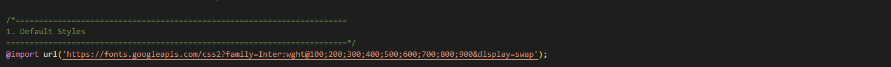
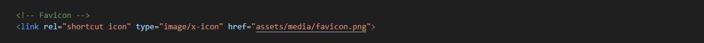
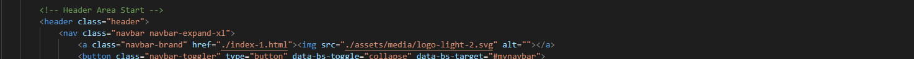
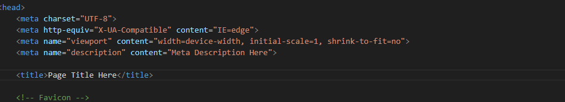
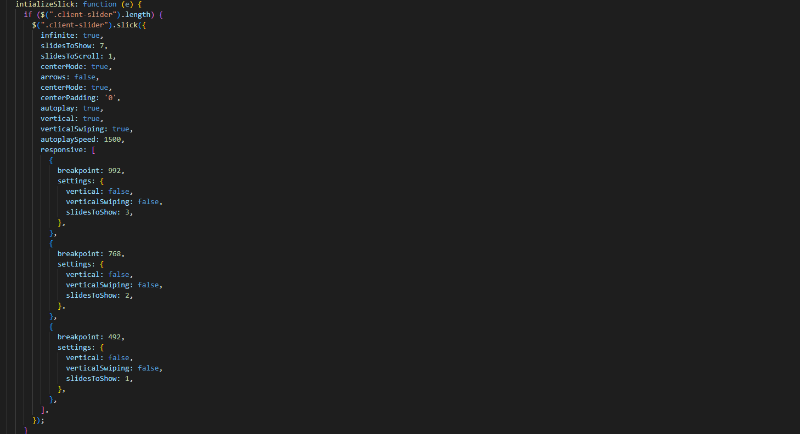
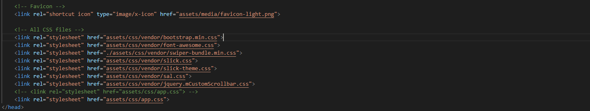
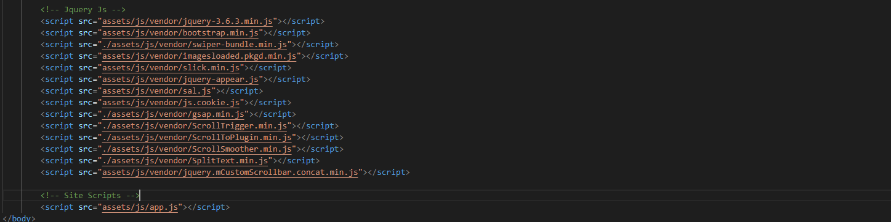
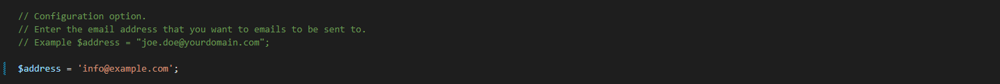

Before you proceed with HTML Template installation, you need to prepare. It is recommended to follow steps, listed below:
We recommend that you download all the required software to edit Website Template. Software Required is listed at template preview page.
Technical requirements might differ depending on exact template, therefore we will list the most basic ones:
You can just run index.html file directly from your site folder, but it won't let you explore all template functionality. You should upload template to hosting server in order to display a fully working website correctly.
In case you have existing server already, please check if it meets Website Template requirements, listed at template preview page. For most templates PHP 5.2+ version is the only requirement.
You may also install Website Template to your computer locally by using localhost. In order to set up local server you may use WAMP, AppServ, MAMP or any similar software. All of them are installed same as regular application.
Feel free to check the following tutorials on how to set up local server:
You need to upload all files of site/ folder from your localhost to hosting.
Note: the root directory of a site depends on the internal structure of your hosting server. If you upload the site folder itself on hosting, the root of your site will be http://your_domain_name/site. You need to upload inner content of site/ folder if you want url to be http://your_domain_name/
After HTML Website Template package extracting you'll see the following files structure:
html/ - Includes all the html files
html/assets/css - Stylesheet files
html/assets/scss - SASS files
Including styling for general elements of html
Including styling for elements like button. heading and preloader
This folder contains styling for animation, responsive queries and spacing
This folder contains styling for header and footer
html/assets/media - Contains the placeholder images that can be replaced
with your ownhtml/assets/js - Javacript files
This folder contains all the js plugin included
html/assets/mail - Contact form
<!DOCTYPE html>
<html lang="en">
<head>
<!-- Your Stylesheets, Core Scripts (jQuery etc) & Title -- <
...
</head>
<body>
<!-- Preloader -->
<div> </div>
<!-- Main Wrapper Start -->
<div>
<!-- Start Header -->
<header>
</header>
<!-- End Header-->
<!-- Page Sections -->
<section>
</section>
<!-- End Page Sections -->
<!-- Star Footer -->
<footer>
</footer>
<!-- End Footer -->
</div>
<!-- Main Wrapper End -->
<!-- Jquery Js -->
<script src="assets/js/vendor/jquery-3.6.3.min.js"></script>
<script src="assets/js/vendor/bootstrap.min.js"></script>
<!-- Includes plugins JS files will be here -->
<!-- Site Scripts -->
<script src="assets/js/app.js"></script>
</body>
</html>
HTML templates are fully customizable, allowing you to tailor the design to your needs. Here are some tips to help you get started:
1. Templates are built with sass you will need to install SASS on your machine follow instruction from this link:
After the successfull instaltion you will need to run following command using CMD prompet on main containing folder 'html':
sass --watch assets/sass:assets/cssGot to 'html/assets/sass/app.scss' file and change the following line:
You will find this line in head of all html files. Favicon image available in 'html/assets/media'
Header logo for the desktop version of the site should be changed in Page Head section of the target page with the .navbar-brand class. Find Logo image available in 'html/assets/media'
You will find this line in head of all html files. Favicon image available in 'html/assets/media'
Navigate to 'html/assets/js/app.js' you will find this.
Add or remove css from head tag of every html page
Add or remove js near to body end tag of every html page
Navigate to 'html/assets/mail/contact.php' file
We would like to take a moment to express our gratitude to those who have contributed to the development of this theme, making it a truly exceptional product for our valued users. We extend our heartfelt thanks to: